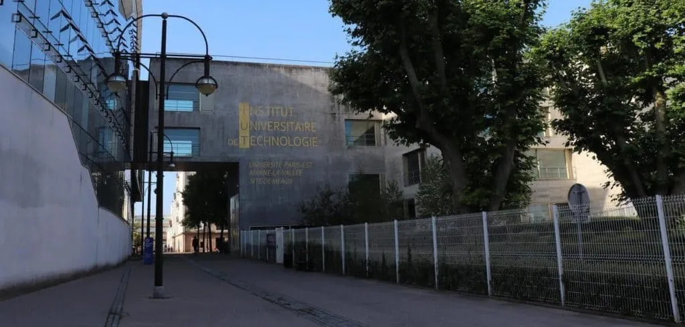
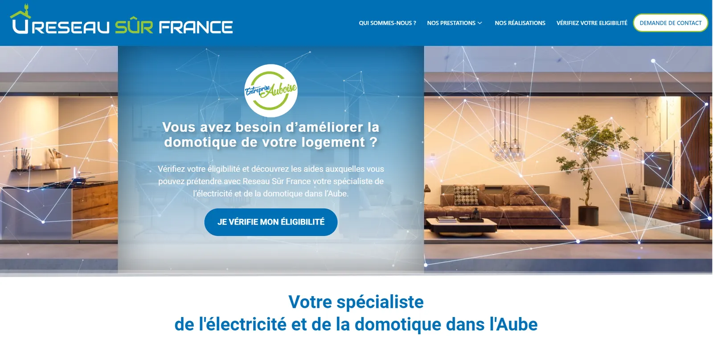
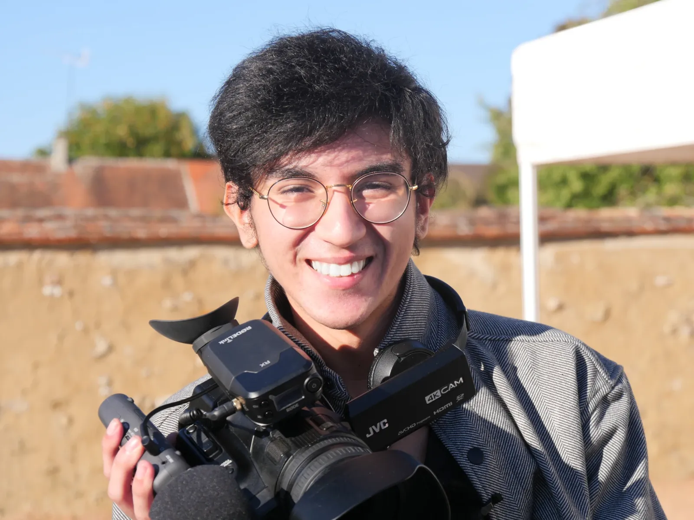

2021Troyes48.30° N, 4.08° E
Le déclic
Bac STI2D, option Systèmes d'information et numérique, au lycée Saint-Joseph La Salle. J'y écris mes premiers programmes, avec l'envie de comprendre ce qu'il y a derrière un écran.
Un bac à Troyes, le design à Meaux, la réalité virtuelle à Valenciennes, et entre deux, des stages et une alternance dans des entreprises de l’Aube.
2021Troyes48.30° N, 4.08° E
Bac STI2D, option Systèmes d'information et numérique, au lycée Saint-Joseph La Salle. J'y écris mes premiers programmes, avec l'envie de comprendre ce qu'il y a derrière un écran.
2021Meaux48.96° N, 2.88° E
Je pars trois ans à Meaux pour un BUT MMI : code, UX, vidéo, graphisme. J'y ai appris à tester une interface avec les personnes qui vont s'en servir.

2022Troyes48.30° N, 4.08° E
Un stage administratif chez Ophta Médical. En voyant le planning de l'équipe, j'ai construit un tableau qui calcule les heures et les heures supplémentaires de chacun.
« Il nous a apporté des idées pour compléter notre planning du personnel, en créant un tableau qui permet de calculer les heures de travail journalières et de visualiser les heures supplémentaires de chaque employé. »
2023Saint-André-les-Vergers48.28° N, 4.05° E
Trois mois chez Réseau Sûr France pour livrer leur nouveau site, avec l'équipe marketing et des demandes qui changent jusqu'au bout.
« Ziyad a su mettre en avant ses compétences et son savoir-faire tout au long de son stage. Il s’est adapté très rapidement à l’entreprise, à sa charte graphique ainsi qu’à son fonctionnement. »

2023Troyes48.30° N, 4.08° E
En alternance chez Distri Sûr France, j'ai conçu et développé la boutique en ligne, des maquettes Figma à la mise en ligne sur Odoo.

2024Valenciennes50.36° N, 3.52° E
Master Sciences et Technologies du Métavers à l'INSA Hauts-de-France : réalité virtuelle, IA, mobile, blockchain, big data. Et l'équipe e-sport de l'école entre deux rendus.

2026Troyes48.30° N, 4.08° E
Sept mois pour remplacer les fichiers Excel de quatre sociétés par une seule application, web et Android, en production sur AWS.

2026Troyes48.30° N, 4.08° E
De retour à Troyes. SubForge avance, et le labo grossit à chaque nouveau dépôt GitHub.

Les projets nés de ces années sont dans la collection.